ClimateCheck: Drought Method
2022-03-31
Drought: water stress
Risk data and estimation
We estimate drought risk based on the Water Supply Stress Index (WaSSI) hydrologic model, which measures how much available water in a location is used by human activity. WaSSI is specific to each watershed, a land area with the same water outlet. The geographic unit of analysis is USGS hydrologic designation HUC-8, the sub-basin level, analogous to medium-sized river basins. WaSSI takes into account current and projected water supply (surface and ground water), demand due to population size and water use, and features of the watershed, such as soil properties and land cover. The underlying analysis uses downscaled data from CMIP5 climate models under the RCP8.5 scenario as inputs (Averyt et al. 2013; Duan et al. 2019).
Hazard description and projected change
Climate change poses challenges to water stress for human and ecological systems. Researchers often use water stress interchangeably with drought, which broadly represents any process generating water scarcity. Water stress occurs as demand for ground, soil, and fresh water supplies increases relative to supply. Recent studies suggest that the spatial extent, frequency, and duration of droughts will increase in the future (Dai 2011; Bonsal et al. 2013; Fraser et al. 2013; Wilhite and Glantz 1985; Diffenbaugh, Swain, and Touma 2015; Rajsekhar, Singh, and Mishra 2015). Water availability depends heavily on expectations from existing climate regimes (Antle and Capalbo 2010; Roberts, Schlenker, and Eyer 2012). Therefore, a changing climate generates uncertainty and presents novel challenges for human systems. Soil moisture–a function of infiltration rates, groundwater, precipitation, temperature, and other factors–has variable influence on crop yield insofar as the depth of available moisture coincides with root development (Wilhite and Glantz 1985). Management decisions also play a key role in soil conditions (Daryanto, Wang, and Jacinthe 2016). Aside from long-term climate change, medium-term climatic variability, such as El Niño Southern Oscillation, exhibits impacts on water stress globally (Mishra and Singh 2010).
Certain crop types, agroecological regions, and socioeconomic conditions are more sensitive to climatic variability (Fraser et al. 2013; Hertel and Lobell 2014). Increasing water stress threatens water supplies and productive activities, especially in dryland areas (Fraser et al. 2011) and those with the least adaptive capacity (Kiparsky, Milman, and Vicun 2012; Gohar, Amer, and Ward 2015; Wanders and Wada 2015). Socioeconomic challenges arise from water scarcity, such as shortages for hydroelectric power generation (Nanduri and Saavedra-Antolínez 2013), crop loss (Lobell et al. 2013), and water quality (van Vliet, Flörke, and Wada 2017). Specifying water scarcity impacts at a fine spatiotemporal scale paves an essential foundation for innovative water infrastructure and environmental governance schemes seeking greater adaptive capacity to a changing climate (Gohar, Ward, and Amer 2013; Pahl-Wostl and Knieper 2014; Lange, Holman, and Bloomfield 2017). Water stress has historically been the dominant climate factor determining crop yield (Lobell et al. 2014), however heat is increasing in importance and will continue to do so with a warming climate (Lobell et al. 2015). Most research suggests looking more intensively at the coeffects of heat and precipitation stress on crop loss as multiplicative effects may exist (Prasad, Staggenborg, and Ristic 2008).
Data Preparation
We estimate drought risk with the Water Supply Stress Index (WaSSI), which represents the water stress a property faces in the future with climate change. These data come as annual water demand and supply estimates in cubic meters, output using an ensemble of 20 climate models. Projections are based on trends in the climate, demographics, and uses such as irrigation and thermoelectric power.
Water Supply Stress Index
We measure WaSSI by calculating the ratio of water demand to water supply within a watershed. The model considers demand as water withdrawal and consumption for domestic, thermoelectric, and irrigation purposes. Supply is local and upstream water flow minus upstream consumption plus interbasin transfers (places where water sourced from one area is used in another). Water stress is measured within the local watershed, which is the land area that channels natural water supply to a property. This watershed does not necessarily account for a water provider’s strategies to overcome water stress such as through aqueducts and other infrastructure. A WaSSI value above 1 indicates that water demand is higher than water supply. The higher the WaSSI the higher the water stress. We average WASSI in five-year intervals from 2020 to 2060, with a sliding window around each target year. We use a twenty year window for baseline and projected WaSSI averages and trim all average values to the 95th percentile to remove outliers.
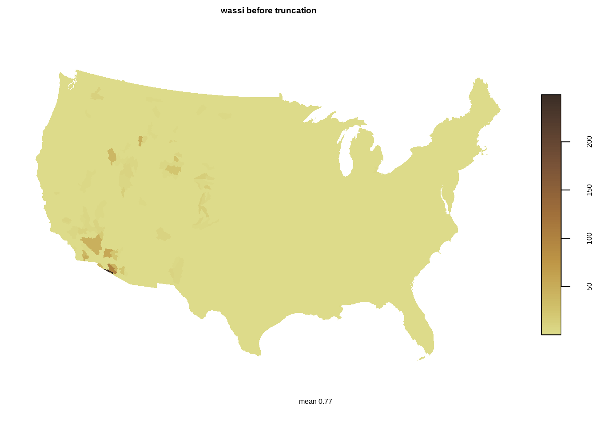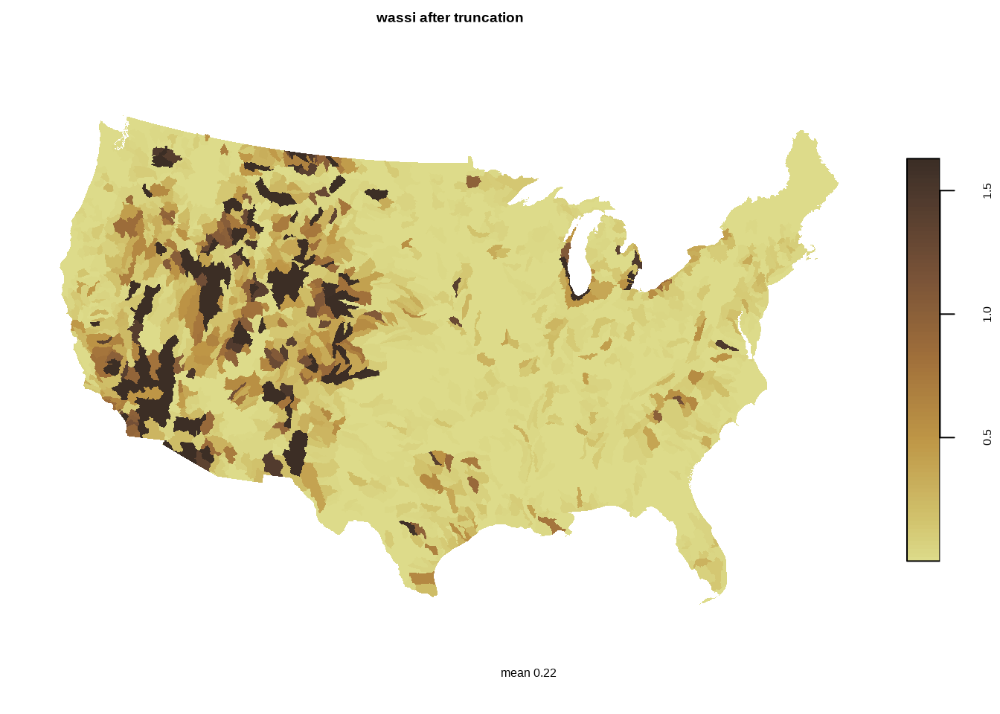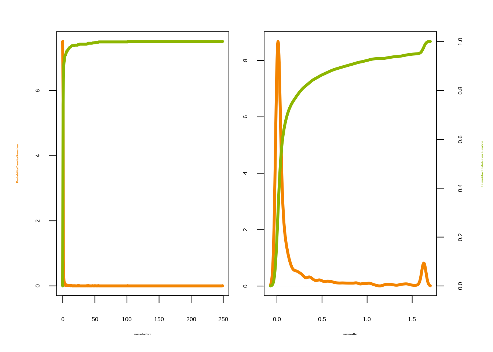
Great Lakes
The WaSSI model presents an issue for watersheds adjacent to the Great Lakes. It doesn’t consider sourcing from the Lakes as a flow or an interbasin transfer. Therefore, the WaSSI for these watersheds would be artificially inflated if we just based it off the demand/supply ratio. Incorporating sourcing data from local water districts would be one solution to this problem. We could adjust supply values by the approximate amount of water sourced from the Great Lakes for all local water districts within a watershed. However, accessing and utilizing these data is neither straightforward nor always possible. A new law from the EPA requires districts to federally report data and information on sourcing, sustainability, climate plans, and the like, by 2022. At that stage, we could look back at this issue to resolve it with this solution.
An alternative solution stems from the Great Lakes-St. Lawrence River Basin Water Resource Council, an interstate and international body that oversees use of surface freshwater from its namesake according to a 2008 Compact. The compact stipulates that water supply should be analyzed at the basin scale rather than the watershed since the Lakes serve as transfers, thus making the Great Lakes one resource pool for adjacent watersheds. Accordingly, we aggregate Great Lakes-adjacent watershed supply and demand to calculate a basin-scale WaSSI.
These are all the hydrologic units (HUC8) comprising the Great Lakes Basin. We aggregate water supply and demand for these HUC8 to better capture the shared water resources of the Great Lakes.
<img src="droughtValidate_files/figure-html/great lakes-1.png" width="672" style="display: block; margin: auto;" /> Only incorporating HUC8s in the Great Lakes basin leaves the remaining problem of boundary discontinuities, e.g. drastically different WaSSI in adjacent HUC8, one which is in the Great Lakes Basin and the other which is not. This is particularly problematic when HUC8 boundaries cross through metropolitan areas, such as Chicago. In the map below, we see that the Chicago metro area contains two hydrologic regions, Great Lakes in yellow and Upper Mississippi in red.

To adjust for this issue, we may aggregate not only HUC8s in the Great Lakes Basin but also HUC8s adjacent to the basin. This makes sense from a water withdrawl perspective since the Great Lakes Compact applies to the entirety of states bordering the lakes, not just the HUC8s.

We annually weight WaSSIs in the aggregated HUC8s by their normalized water demand so that every HUC8 in the set does not have the exact same WaSSI. This makes hydrologic sense since water supply from the Lakes is declining due to the compact so water stress will be increasingly tied to the watershed, not the basin.


ClimateCheck Risk Rating
The following steps calculate the relative change from baseline to target future year, normalize the relative change, weight the projected average in target year by the normalized relative change, and map weighted projected averages for each target year to the cumulative distribution function of the 2050 weighted projected average. This results in a final ClimateCheck Risk Rating from 0 to 100 that is relative to other cells and to the year 2050, which is within the standard thirty year mortgage term. Properties in areas with a higher risk increase will have relatively higher Risk Ratings. Please see the generalMethod.pdf for more detail on this process. We present results for the year 2050.
Relative change
 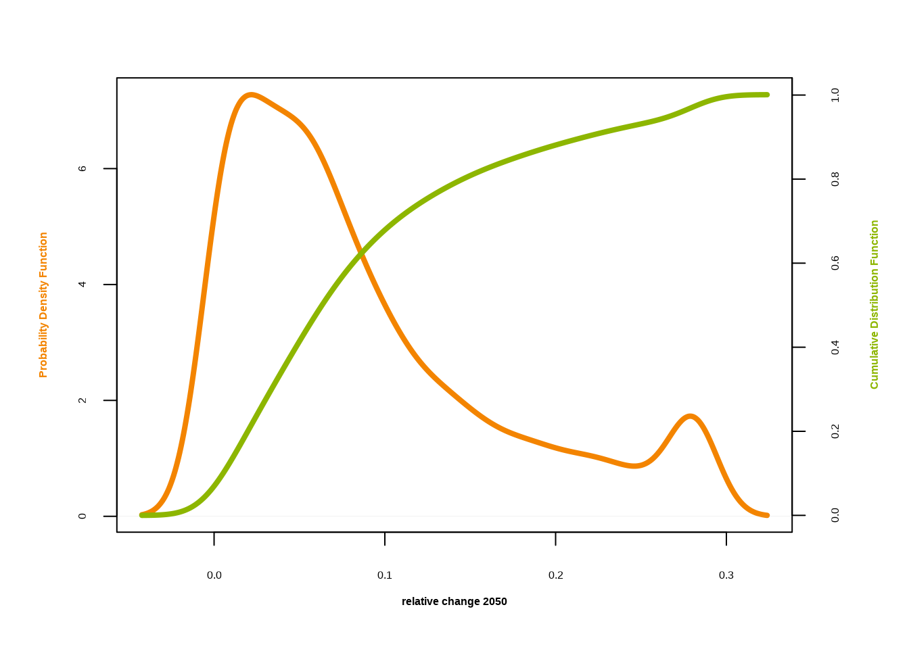
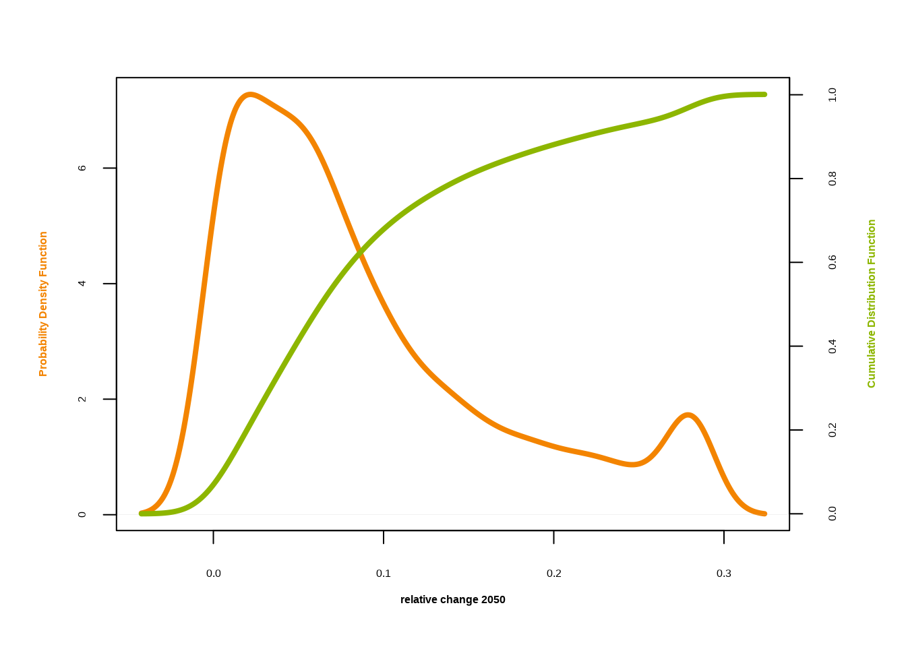
Normalized relative change
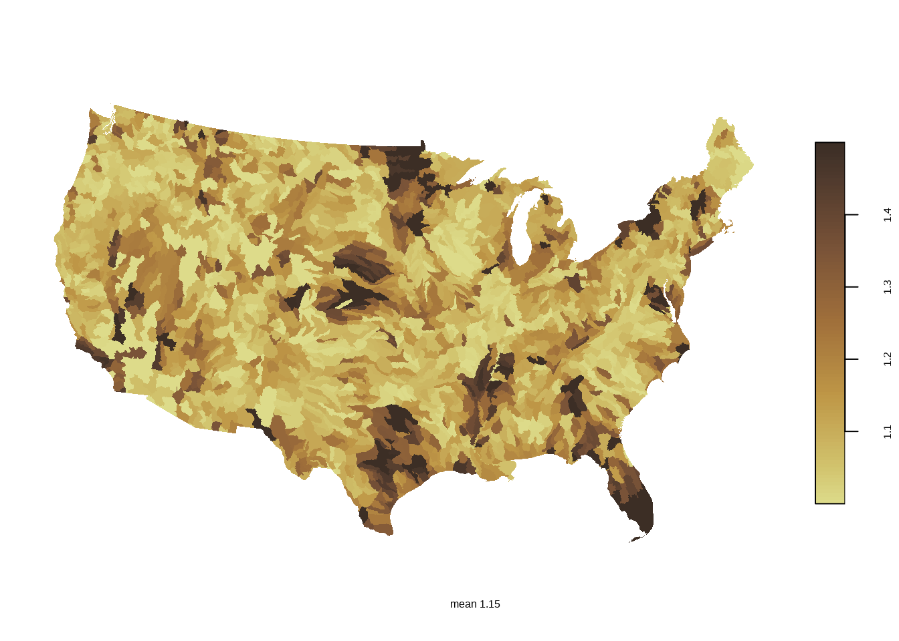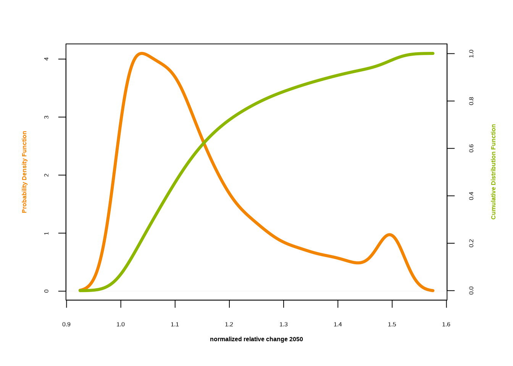
Weighted projected average
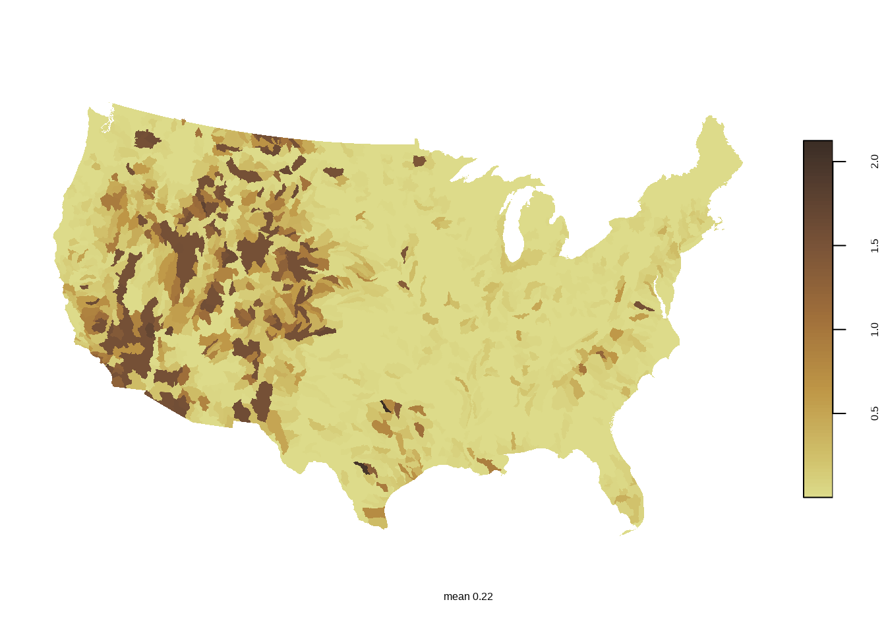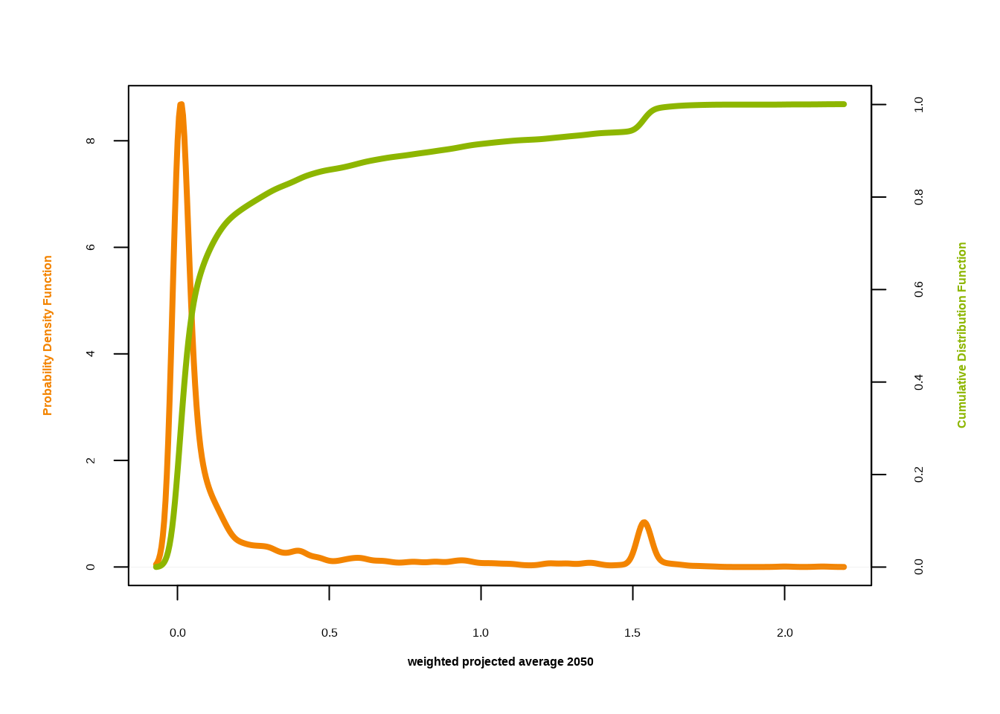
Drought Risk Rating
Typically we produce the ClimateCheck Risk Rating by mapping weighted projected averages onto the 2050 weighted projected average cumulative distribution function. Sometimes this mapping produces biased Risk Ratings. In these cases, we instead utilize stepped minmax transformations to produce the Risk Rating. The stepped minmax normalizes weighted projected averages in bins. For each bin, we manually set the range represented in the transformation based on scientific and empirical evidence. For example, with WaSSI, we create four bins: low water stress, moderate water stress, high water stress, and demand higher than supply. These bins have both empirical and theoretical bases. Low water stress comprises the majority of watersheds, moderate water stress is the range between the majority and the point at which water stress becomes a pressing issue for a community. Watersheds at this point, high water stress, and beyond face infrastructural, economic, and quality of life challenges. Once demand exceeds supply, more drastic actions must be taken to ensure sufficient water else catastrophic outcomes may ensue.
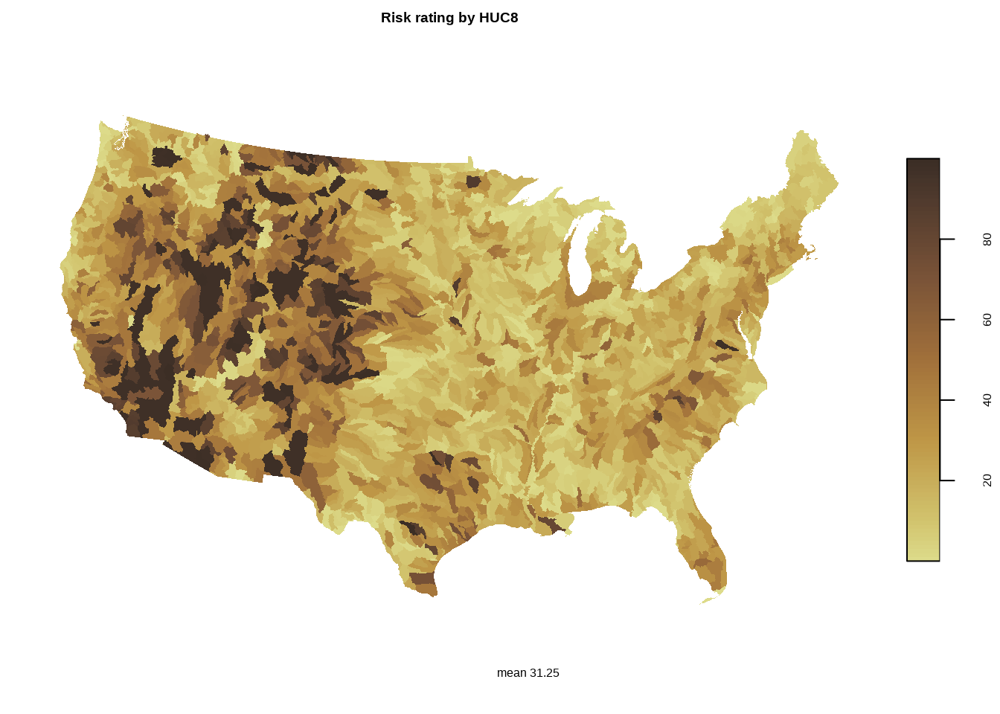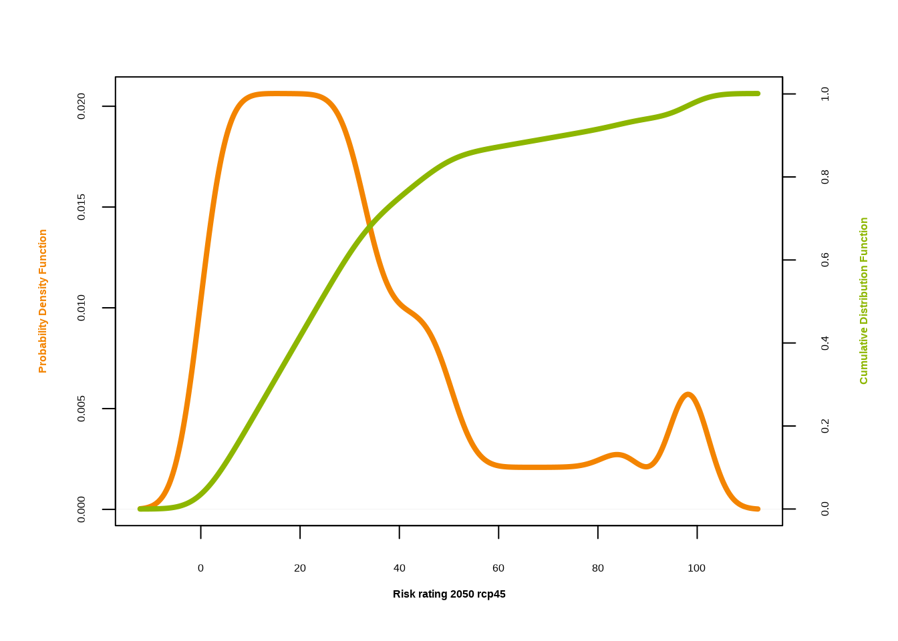
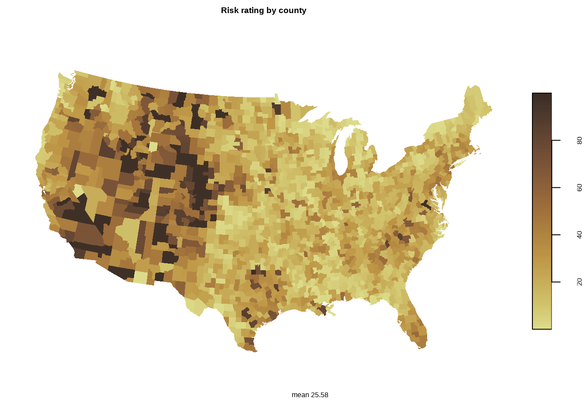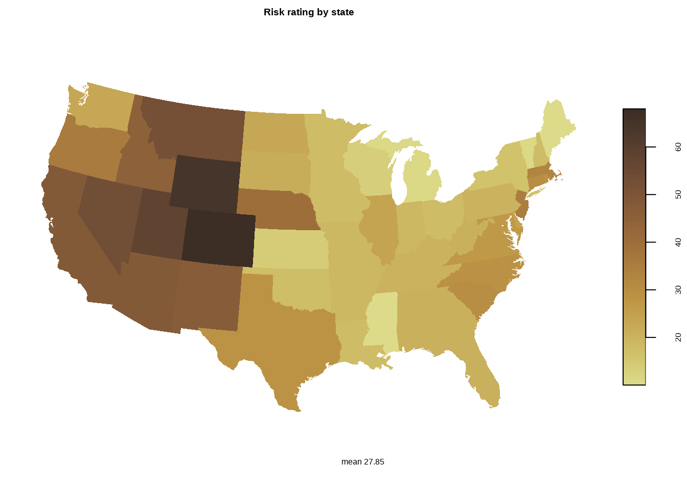
List of 5 $ nInserted : num 2099 $ nMatched : num 0 $ nRemoved : num 0 $ nUpserted : num 0 $ writeErrors: list()
Trends over time
old wassi
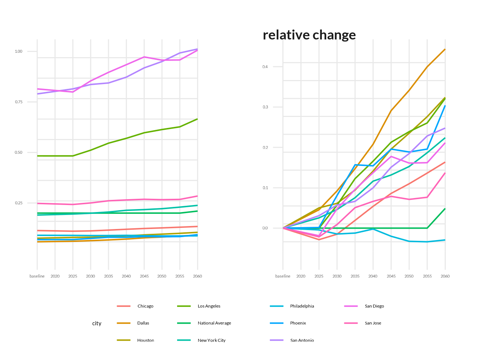
old risk rating
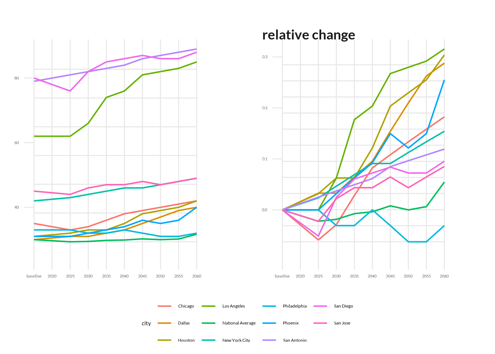
new wassi
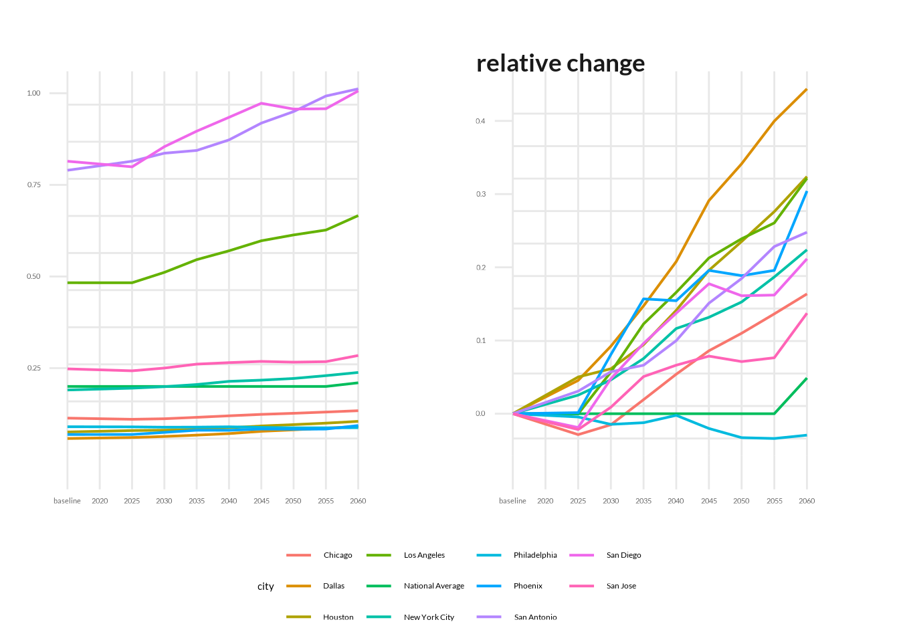
new risk rating
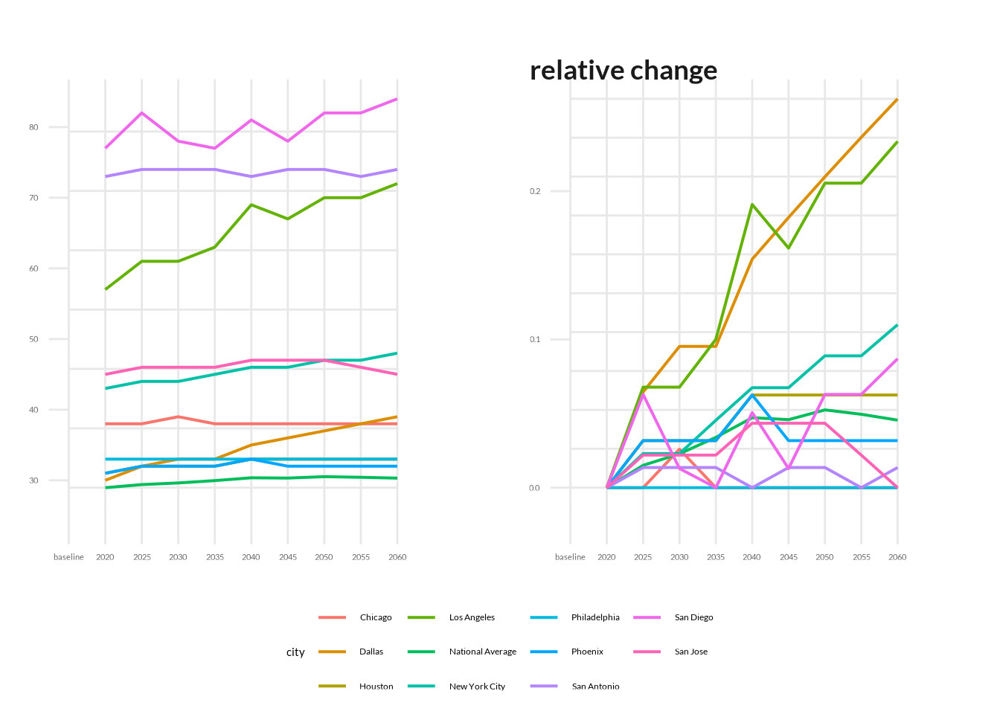
Statistics by city
| lon | lat | cities | old.future_avg_2020 | old.future_avg_2050 | old.score_2050 | new.future_avg_2020 | new.future_avg_2050 | new.score_2050 | cities |
|---|---|---|---|---|---|---|---|---|---|
| -74.16 | 40.52 | New York City | 0.19 | 0.22 | 47 | 0.19 | 0.22 | 47 | New York City |
| -118.28 | 34.18 | Los Angeles | 0.48 | 0.61 | 82 | 0.48 | 0.61 | 80 | Los Angeles |
| -87.67 | 41.73 | Chicago | 0.11 | 0.13 | 40 | 0.11 | 0.13 | 40 | Chicago |
| -95.44 | 29.80 | Houston | 0.08 | 0.10 | 39 | 0.08 | 0.10 | 39 | Houston |
| -75.06 | 39.91 | Philadelphia | 0.09 | 0.09 | 31 | 0.09 | 0.09 | 33 | Philadelphia |
| -111.67 | 33.54 | Phoenix | 0.07 | 0.08 | 35 | 0.07 | 0.08 | 35 | Phoenix |
| -98.44 | 29.45 | San Antonio | 0.79 | 0.95 | 87 | 0.79 | 0.95 | 87 | San Antonio |
| -116.91 | 32.90 | San Diego | 0.81 | 0.96 | 86 | 0.81 | 0.96 | 87 | San Diego |
| -96.53 | 32.47 | Dallas | 0.06 | 0.08 | 37 | 0.06 | 0.08 | 37 | Dallas |
| -121.83 | 37.27 | San Jose | 0.25 | 0.27 | 47 | 0.25 | 0.27 | 47 | San Jose |
| -110.67 | 32.06 | Tucson | 0.05 | 0.05 | 28 | 0.05 | 0.05 | 28 | Tucson |
| -78.68 | 42.72 | Buffalo | 0.02 | 0.03 | 27 | 0.02 | 0.03 | 27 | Buffalo |
| -84.61 | 34.22 | Atlanta | 0.13 | 0.16 | 45 | 0.13 | 0.16 | 45 | Atlanta |
| -93.25 | 45.04 | Minneapolis | 0.03 | 0.03 | 25 | 0.03 | 0.03 | 25 | Minneapolis |
| -105.25 | 39.39 | Denver | 0.35 | 0.53 | 79 | 0.35 | 0.53 | 75 | Denver |
| -122.05 | 47.58 | Seattle | 0.06 | 0.06 | 32 | 0.06 | 0.06 | 32 | Seattle |
| -90.12 | 30.18 | New Orleans | 0.02 | 0.03 | 25 | 0.02 | 0.03 | 25 | New Orleans |
| -80.74 | 26.05 | Miami | 0.10 | 0.15 | 44 | 0.10 | 0.15 | 44 | Miami |
| -83.34 | 42.37 | Detroit | 0.09 | 0.10 | 35 | 0.09 | 0.10 | 35 | Detroit |
| -115.30 | 36.30 | Las Vegas | 1.44 | 1.54 | 100 | 1.44 | 1.54 | 100 | Las Vegas |
| -90.20 | 38.44 | St Louis | 0.00 | 0.00 | 9 | 0.00 | 0.00 | 8 | St Louis |
| -71.09 | 42.40 | Boston | 0.09 | 0.08 | 32 | 0.09 | 0.08 | 32 | Boston |
| -80.93 | 32.27 | Savannah | 0.03 | 0.03 | 25 | 0.03 | 0.03 | 25 | Savannah |
| -86.85 | 36.22 | Nashville | 0.01 | 0.01 | 16 | 0.01 | 0.01 | 16 | Nashville |
| -76.27 | 37.02 | Virginia Beach | 0.04 | 0.05 | 30 | 0.04 | 0.05 | 30 | Virginia Beach |
References
Antle, John M., and Susan M. Capalbo. 2010. “Adaptation of Agricultural and Food Systems to Climate Change: An Economic and Policy Perspective.” Applied Economic Perspectives and Policy 32 (3): 386–416.
Averyt, K., J. Meldrum, P. Caldwell, G. Sun, S. McNulty, A. Huber-Lee, and N. Madden. 2013. “Sectoral Contributions to Surface Water Stress in the Coterminous United States.” Environmental Research Letters 8 (3): 035046. https://doi.org/10.1088/1748-9326/8/3/035046.
Bonsal, Barrie R., Rabah Aider, Philippe Gachon, and Suzan Lapp. 2013. “An Assessment of Canadian Prairie Drought: Past, Present, and Future.” Climate Dynamics 41: 501–16.
Dai, Aiguo. 2011. “Drought Under Global Warming: A Review.” WIREs Climate Change 2 (1): 45–65. https://doi.org/10.1002/wcc.81.
Daryanto, Stefani, Lixin Wang, and Pierre-André Jacinthe. 2016. “Global Synthesis of Drought Effects on Maize and Wheat Production.” PloS One 11 (5): e0156362.
Diffenbaugh, N. S., D. L. Swain, and D. Touma. 2015. “Anthropogenic Warming Has Increased Drought Risk in California.” Proceedings of the National Academy of Sciences.
Duan, Kai, Peter V. Caldwell, Ge Sun, Steven G. McNulty, Yang Zhang, Erik Shuster, Bingjun Liu, and Paul V. Bolstad. 2019. “Data on Projections of Surface Water Withdrawal, Consumption, and Availability in the Conterminous United States Through the 21st Century.” Data in Brief 23 (April): 103786. https://doi.org/10.1016/j.dib.2019.103786.
Fraser, Evan D. G., Andrew J. Dougill, Klaus Hubacek, Claire H. Quinn, Jan Sendzimir, and Mette Termansen. 2011. “Assessing Vulnerability to Climate Change in Dryland Livelihood Systems: Conceptual Challenges and Interdisciplinary Solutions.” Ecology and Society 16 (3).
Fraser, Evan D.G., Elisabeth Simelton, Mette Termansen, Simon N. Gosling, and Andrew South. 2013. “"Vulnerability Hotspots": Integrating Socio-Economic and Hydrological Models to Identify Where Cereal Production May Decline in the Future Due to Climate Change Induced Drought.” Agricultural and Forest Meteorology 170: 195–205.
Gohar, Abdelaziz A., Saud A. Amer, and Frank A. Ward. 2015. “Irrigation Infrastructure and Water Appropriation Rules for Food Security.” Journal of Hydrology 520: 85–100.
Gohar, Abdelaziz A., Frank A. Ward, and Saud A. Amer. 2013. “Economic Performance of Water Storage Capacity Expansion for Food Security.” Journal of Hydrology 484: 16–25. https://doi.org/http://dx.doi.org/10.1016/j.jhydrol.2013.01.005.
Hertel, Thomas W., and David B. Lobell. 2014. “Agricultural Adaptation to Climate Change in Rich and Poor Countries: Current Modeling Practice and Potential for Empirical Contributions.” Energy Economics 46: 562–75.
Kiparsky, Michael, Anita Milman, and Sebastian Vicun. 2012. “Climate and Water: Knowledge of Impacts to Action on Adaptation.” Annual Review of Environmental Resources 37: 163–94.
Lange, Bettina, Ian Holman, and John P. Bloomfield. 2017. “A Framework for a Joint Hydro-Meteorological-Social Analysis of Drought.” Science of the Total Environment 578: 297–306. https://doi.org/http://dx.doi.org/10.1016/j.scitotenv.2016.10.145.
Lobell, David B., Graeme L. Hammer, Karine Chenu, Bangyou Zheng, Greg Mclean, and Scott C. Chapman. 2015. “The Shifting Influence of Drought and Heat Stress for Crops in Northeast Australia.” Global Change Biology 21: 4115–27.
Lobell, David B., Graeme L. Hammer, Greg McLean, Carlos Messina, Michael J. Roberts, and Wolfram Schlenker. 2013. “The Critical Role of Extreme Heat for Maize Production in the United States.” Nature Climate Change 3.
Lobell, David B., Michael J. Roberts, Wolfram Schlenker, Noah Braun, Bertis B. Little, Roderick M. Rejesus, and Graeme L. Hammer. 2014. “Greater Sensitivity to Drought Accompanies Maize Yield Increase in the U.S. Midwest.” Science 344.
Mishra, Ashok K., and Vijay P. Singh. 2010. “A Review of Drought Concepts.” Journal of Hydrology.
Nanduri, Vishnu, and Ivan Saavedra-Antolínez. 2013. “A Competitive Markov Decision Process Model for the EnergyWaterClimate Change Nexus.” Applied Energy 111: 186–98.
Pahl-Wostl, Claudia, and Christian Knieper. 2014. “The Capacity of Water Governance to Deal with the Climate Change Adaptation Challenge: Using Fuzzy Set Qualitative Comparative Analysis to Distinguish Between Polycentric, Fragmented and Centralized Regimes.” Global Environmental Change 29: 139–54.
Prasad, P. V. V., S. A. Staggenborg, and Z. Ristic. 2008. “Impacts of Drought and/or Heat Stress and Yield Processes of Crop Plants.” In Response of Crops to Limited Water: Understanding and Modeling Water Stress E Ects on Plant Growth Processes. American Society of Agronomy, Crop Science Society of America, Soil Science Society of America.
Rajsekhar, Deepthi, Vijay P. Singh, and Ashok K. Mishra. 2015. “Integrated Drought Causality, Hazard, and Vulnerability Assessment for Future Socioeconomic Scenarios: An Information Theory Perspective.” Journal of Geophysical Research: Atmospheres 120 (13): 6346–78. https://doi.org/10.1002/2014JD022670.
Roberts, Michael J., Wolfram Schlenker, and Jonathan Eyer. 2012. “Agronomic Weather Measures in Econometric Models of Crop Yield with Implications for Climate Change.” American Journal of Agricultural Economics 95 (2): 236–43.
van Vliet, Michelle T. H., Martina Flörke, and Yoshihide Wada. 2017. “Quality Matters for Water Scarcity.” Nature Geoscience 10 (11): 800–802. https://doi.org/10.1038/ngeo3047.
Wanders, N., and Y. Wada. 2015. “Human and Climate Impacts on the 21st Century Hydrological Drought.” Journal of Hydrology, Drought processes, modeling, and mitigation, 526 (July): 208–20. https://doi.org/10.1016/j.jhydrol.2014.10.047.
Wilhite, Donald A., and Mickey Glantz. 1985. “Understanding the Drought Phenomenon: The Role of Definitions.” Water International, 111–20.